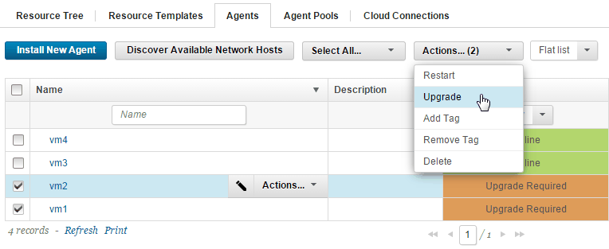

Upgrading agents remotely
Use the Upgrade action to upgrade agents that have a status of Upgrade Recommended or Upgrade Required. Always upgrade agents and agent relays in addition to upgrading the server.
If you have inactive agents that you want to use, set the Enable "Show Inactive" Links option on the System Settings page. When that option is selected, inactive agents appear in the list of agents and can have actions that are applied to them like any other agent. See Server settings.
In most cases, upgrade the server before you upgrade the agents. If you are upgrading from a version before 4.8.5, you must upgrade the server to 4.8.5 or 5.0 before you upgrade the server to 6.0 or later. To ensure compatibility between your agents and the server, upgrade the agents after you upgrade the server to 4.8.5 or 5.0.
You must have the permissions "Edit Basic Settings" and "View Agents" on the agents that you are upgrading.
The user account performing the upgrade must have access to all working directories that are used in the upgrade process. Specifically, permissions for execute, read and write the air-agentupgrade.jar file to <AGENT_HOME>/bin are required.
An agent's status indicates when it is time to upgrade it. If an agent has the Upgrade Required status, the agent cannot run deployments until it is upgraded. This status might occur if a change is made to server-agent communications, or if the agent is at a version before 4.8.5. The status of Upgrade Recommended might occur after a performance enhancement. An agent with the status Upgrade Recommended still can run deployments, but for best performance, upgrade the agent. You can upgrade agents individually or in a batch.
Upgrade agents to improve the security of HCL® UrbanCode™ Deploy security by using a TLS protocol. Some older agents are only compatible with SSLv3. SSLv3 is dynamically enabled if necessary. See Supported TLS and SSL protocols and ciphers.
To upgrade an agent:
- Click Resources > Agents. The Agents pane lists agents and their status.
- Select the check boxes for the agents to upgrade.
-
Click Actions > Upgrade Upgraded agents are taken offline while the upgrade is applied and have the Offline status. If the upgrade finishes, the agents are automatically restarted and have the Online status. If the agents do not come back online, check their logs for error messages.

Note:
Updating many agents simultaneously can have a significant affect the server. As a rule-of-thumb, limit the number of simultaneous upgrades to 10 or fewer.
Parent topic: Upgrading agents